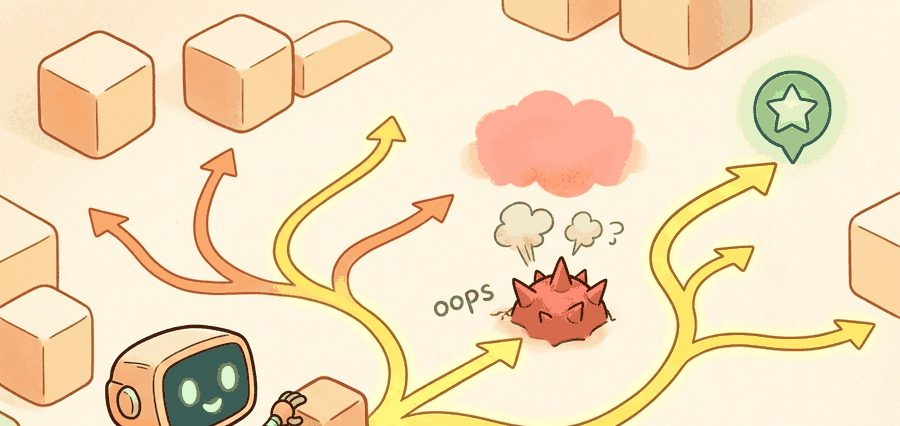
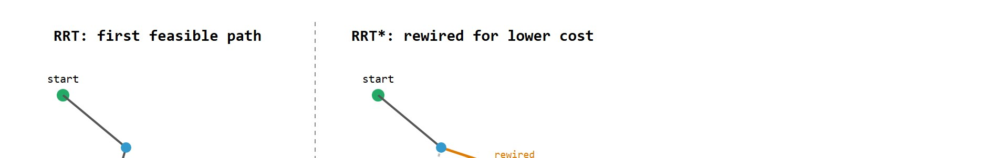
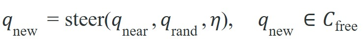

Sampling-based planning is useful when the planner can explain the accepted path and the safety reason each rejected path failed.
A Local Planner With Commitment Issues

This section assumes familiarity with graph search and cost functions from section 30.2. The sampling and rewiring ideas developed here are applied directly in section 30.4, where local planners must hand off control from a sampled global path to real-time obstacle avoidance. Section 30.5 then revisits configuration-space coverage from a learned-policy perspective, replacing hand-designed sampling distributions with neural policies trained on the same problem structure.
A surgical robot needs a collision-free path through a patient's anatomy in under a second. A warehouse robot must weave through moving forklifts without stopping to enumerate every corridor. Grid search breaks down in these high-dimensional, cluttered spaces, but sampling-based planners (RRT, RRT*, PRM) succeed because they explore by random probing rather than exhaustive enumeration. They are now the backbone of real-time motion planning across surgical robots, autonomous vehicles, and humanoids. Here you will build intuition for how each algorithm grows its tree or graph, understand the asymptotic optimality gap between RRT and RRT*, and connect the planner output to a controller that must actually track the path.
Lay a grid over the 7 joint angles of a robot arm at a coarse 10 cells per axis, and you have already conjured ten million cells. Most of them sit inside a wall or cannot be reached. A manipulator, drone, or car-like robot lives in a continuous configuration space: the space of all possible robot poses, where each axis is one degree of freedom such as a joint angle or a base coordinate. Discretizing everything there becomes expensive or misleading. As Figure 30.3.1 illustrates, a sampling-based planner earns its keep only once its visual idea ties to a concrete state variable, an uncertainty model, and the next robot action.
Sampling-based planners trade exhaustive enumeration for random coverage. RRT grows a tree toward random samples, RRTstar rewires toward asymptotic optimality, and PRM builds a reusable roadmap. Collision checking is the core cost center. A planner that finds a path through configuration space but cannot confirm that path is collision-free has not solved the problem: it has only deferred the collision to execution time.
On a physical robot, an undetected collision is not a search failure: it is a broken joint, a damaged sensor, or an injured person. Every candidate edge in the tree must be verified before the robot can act on it, so the number of collision queries, not the tree structure, dominates planning time. A 7-DOF (Degrees of Freedom) arm issuing 10,000 samples per planning cycle executes tens of millions of geometry queries per second at full replanning rate.
Mechanically, a collision check sweeps the robot's geometry along the proposed edge in configuration space and tests for overlap with obstacle meshes at discrete intervals. Each test transforms the robot's link volumes into world coordinates, then runs a convex-hull or signed-distance query against every obstacle. Step size governs both safety and speed: large steps can jump through thin obstacles, while small steps multiply the query count. Libraries such as FCL and its GPU successor coalFCL (coal is a maintained fork of FCL that offloads the same bounding-volume queries to the GPU for higher query throughput) speed this up. They maintain bounding-volume hierarchies that reject non-overlapping pairs in one comparison rather than testing all geometry pairs.
Every variant below reuses the same steer-and-check primitive that the Formal Model section states precisely later in this section; for now, read "steer toward the sample" as "take a small, collision-checked step from the nearest existing node in the direction of the random sample."
Figure 30.3.2 below contrasts the two behaviors side by side. The difference between RRT and RRT* matters in practice. Plain RRT stops as soon as any path reaches the goal. The result is the first feasible path found, not a good one. A robot arm navigating around a shelf may sweep 270 degrees around an obstacle when a 90-degree rotation was available. RRT* adds a rewiring step. After placing a new node, it checks whether nearby tree nodes would reach lower cost through the new node, and updates parent pointers accordingly. This mechanism is called asymptotic optimality through local rewiring. The difference is typically substantial, though the exact gap depends on the benchmark and implementation: on a 7-DOF arm benchmark (sampling-planner comparisons circa 2016-2020), plain RRT settles at path costs 40-60% above optimal. RRT* converges within 5-15% of optimal on the same 10,000-sample budget, with the exact margin depending on environment clutter and corridor width. Given enough samples, RRT* produces paths that converge toward the true optimum. PRM takes a third approach: it spends planning budget offline to build a dense roadmap of the configuration space, then answers repeated queries by searching that roadmap with Dijkstra or a similar graph planner. Concretely, building the roadmap means sampling many random configurations once, connecting each to its nearby feasible neighbors with the same collision-checked steering step used by RRT, and caching the resulting graph; every subsequent start-goal query then reuses that cached graph and only needs a fast graph search, not a fresh sampling pass. PRM is the right choice when the same workspace is queried thousands of times, as in a fixed industrial cell.
So far: RRT finds any feasible path fast and stops, RRT* keeps rewiring toward a near-optimal path as samples accumulate, and PRM front-loads the sampling cost into a reusable roadmap for workspaces queried repeatedly.

In OMPL's (Open Motion Planning Library) RRT* implementation the setRange() parameter controls both the steering step size and, implicitly, the rewiring radius. If you leave it at the default (roughly 10% of the state-space diameter) in a tight environment, the rewiring neighborhood shrinks so far that almost no nodes are ever reconnected, and RRT* performs no better than plain RRT regardless of how many samples you allow. Set the range to approximately the largest obstacle-free corridor width in your environment and verify rewiring is actually firing by checking getPlannerData().numEdges() before and after a planning call: the count should grow with sample count, not stay flat.
A sampled path is a hypothesis until collision checking and control tracking both agree.
Those three behaviors, growing a tree, rewiring it, and reusing a roadmap, all reduce to the same single primitive: take a step from a known node toward a random sample and keep it only if it stays in free space.
Most navigation methods can be read as constrained search or optimization:

The objective names feasible connection to the goal; constraints are collision, steering feasibility, clearance, dynamic limits, and planning-time budget.
The steering line in that loop is where most planner bugs hide, so before trusting a library it pays to watch a single step execute on paper.
Code Fragment 1 isolates sampling-planner invariants: valid sample, nearest neighbor, collision-free edge, and extracted path. The point is to catch geometry bugs before using OMPL.
# One RRT steering step in a 2D configuration space.
# The step-size limit prevents the tree from jumping through obstacles.
import numpy as np
q_near = np.array([1.0, 1.0])
q_rand = np.array([4.0, 5.0])
eta = 1.5
direction = q_rand - q_near
q_new = q_near + eta * direction / np.linalg.norm(direction)
print(np.round(q_new, 2))Expected output interpretation. The new node lands partway toward the random sample, not at it, because the steering radius caps each expansion to a feasible local move. A real planner collision-checks this intermediate state, so the coordinates of `q_new`, not the sampled target, are what matter.
Work in a 2D configuration space with cost equal to Euclidean path length. The tree already holds three nodes: start A at (0, 0) with cost-to-reach 0; node B at (2, 0) connected to A with cost 2; node C at (4, 0) connected to B with cost 4 (path A to B to C). Now sample a new node D at (3, 2).
Step 1, nearest neighbor. Distances from D: to A is sqrt(9+4)=3.61, to B is sqrt(1+4)=2.24, to C is sqrt(1+4)=2.24. B and C tie; pick B. Connect D to B, so cost(D) = cost(B) + 2.24 = 2 + 2.24 = 4.24.
Step 2, choose best parent in radius. Within rewiring radius r=2.5, candidate parents for D are B (would give 2 + 2.24 = 4.24) and C (would give 4 + 2.24 = 6.24). B wins, so D keeps B as parent at cost 4.24. Plain RRT would stop here.
Step 3, rewire neighbors through D. Check C: its current cost is 4.0 via B. Reaching C through D would cost cost(D) + dist(D,C) = 4.24 + 2.24 = 6.48, which is worse than 4.0, so C is not rewired. No edge changes. The lesson: rewiring only fires when the new node offers a genuinely shorter route, which is exactly why a poorly chosen rewiring radius (too small to reach neighbors, or neighbors already cheap) leaves RRT* behaving like RRT.
Intuitive Surgical's da Vinci research kit and academic forks plan instrument trajectories through deformable tissue using OMPL's RRT-Connect and RRT* under a hard sub-second budget so the surgeon's commanded motion is checked for collision against reconstructed anatomy before the arm moves. The same OMPL planners ship inside MoveIt 2, which drives the manipulation stack on platforms from the Franka Panda to NASA's Robonaut, making sampling-based planning the de facto motion-planning backbone across both medical and industrial arms.
Once the steering and collision invariants from that diagnostic are understood, there is no reason to keep hand-writing them: the same primitives are already hardened in production libraries.
OMPL provides maintained implementations of RRT, RRTstar, PRM, KPIECE (a planner that partitions the configuration space into a grid to bias sampling toward less-explored cells), and kinodynamic planners, while MoveIt and Nav2 integrations connect planners to robots. The shortcut replaces custom nearest-neighbor, sampling, and collision-check plumbing.
Keep the tiny RRT or PRM implementation as a regression test for sampling, nearest neighbor, collision checks, and path extraction. Use OMPL or MoveIt 2 for production planning.
A common misconception is that RRT* returns the optimal path once it finds any solution, and that adding more samples only speeds up discovery. Neither is true. RRT* is asymptotically optimal: the path cost decreases continuously as more samples are added, but at any finite sample budget the result is still a sub-optimal approximation. In an embodied AI system, planning budgets are set by real-time constraints (replanning at 10 Hz leaves roughly 100 ms per call), so the robot almost always acts on a path that is still converging toward the optimum, not at it. The correct mental model is that RRT* provides a cost upper bound that tightens with sample count; choose the sample budget by measuring path quality at your time limit, not by assuming the first connected path is good enough.
RRT* is a monotonically improving anytime algorithm: each additional sample can only reduce path cost, never increase it, and the bound tightens continuously. At any finite budget the robot acts on the best approximation found so far. The real-time deadline determines when the search stops, not when the path becomes optimal.
Replay narrow passages, moving obstacles, localization offsets, invalid steering assumptions, and actuator limits. Sampling success in configuration space is not enough if the robot cannot track the path.
Sampling-based planners fail predictably in narrow passages: the probability of drawing a sample inside a thin corridor is proportional to its volume, so a doorway that is 0.5 m wide in a 10 m room represents only 5% of the free-space volume. RRT may require thousands of samples before a node lands inside the passage and the tree can grow through it: a corridor that is 5% of free-space volume expects roughly 1 in 20 samples to land inside it, so at a 1,000-sample budget only about 50 samples even reach the passage entrance, and the odds that two consecutive samples thread the full corridor length drop below 1% for passages longer than a meter. The symptom is a planner that solves wide-open benchmarks in milliseconds but times out on corridor-heavy floor plans. Standard mitigations are bridge sampling (place samples near obstacle boundaries), workspace decomposition, or a PRM that pre-populates the roadmap offline so narrow passages are discovered once rather than on every query.
Log sampled states, rejected edges, collision checks, nearest-neighbor calls, path smoothing, clearance, and controller tracking. Those fields show whether failure came from sampling, collision checking, or execution.
Freeze state space, sampler, collision checker, steering function, goal bias (the probability of sampling the goal directly instead of a random configuration, which speeds convergence but can skew comparisons if left unfixed), smoothing, robot footprint, and dynamics assumptions before comparing sampling planners.
Three directions are actively narrowing the gap between offline benchmarks and physical deployment as of 2024-2026. First, diffusion-model-guided sampling replaces uniform random probing with a denoising generative model conditioned on start, goal, and obstacle geometry: Motion Planning Diffusion (Carvalho et al., NeurIPS 2023 workshop, extended 2024) shows that a diffusion prior seeded on a Franka Panda dataset cuts median planning time in cluttered shelves by 5x compared with vanilla RRT*, and follow-on work from the Kavrakilab group (Rice University, 2025) extends this to multi-arm coordination where joint distributions over two robots collapse infeasible joint configurations before a single collision check runs. Second, neural signed-distance fields (NeRF-SDF planners) replace mesh-based obstacle representations with a continuous neural field queried during collision checking: NeuralMPL (Driess et al., Science Robotics 2024) uses a pre-trained occupancy network to answer signed-distance queries at under 5 microseconds each on a GPU, enabling 10 Hz whole-arm replanning for a Spot arm navigating environments reconstructed from a single RGB-D scan, without requiring pre-built CAD meshes. Third, informed-set RRT* variants with GPU-parallelized batch sampling (BIT* and AIT*, from the Oxford Robotics Institute, 2024 extension) maintain an ellipsoidal informed subset that shrinks around the best path found so far and evaluate thousands of candidate edges in a single GPU kernel; on 14-DOF dual-arm benchmarks the GPU batch variant reaches 2% of optimal cost in the same wall-clock time that serial RRT* reaches 40% above optimal.
Open problem for PhD students: All three directions assume the collision checker can be queried independently for each candidate configuration, but in deformable-object manipulation (cloth folding, cable routing, surgical tissue retraction) the obstacle shape changes as the robot moves through it, breaking the standard assumption that C-free is fixed during a planning query. No existing sampling planner handles this without freezing the deformable state between steps, which introduces trajectory-length errors that accumulate beyond 10 cm on a 1-meter cable. A rigorous formulation of sampling-based planning over coupled robot-deformable configuration spaces, with convergence guarantees for the deformable collision checker, remains an open problem with direct industrial relevance in cable harness assembly and minimally invasive surgery.
Sampling-based planning is useful when the planner can explain the accepted path and the safety reason each rejected path failed.
Can you state the search space, cost function, constraints, replanning trigger, controller interface, and failure metric for sampling-based planning: rrt, rrt*, prm? If not, the planner is not specified enough to deploy.
Sampling-based planning: RRT, RRT*, PRM is ready for embodied use when route quality, dynamic feasibility, local control, and recovery behavior are measured in the same replay.
Run the panel with narrow passage, cluttered open area, and changed obstacle. Report solution rate, path cost, clearance, planning time, smoothing effect, and whether the controller can track the sampled path.
Goal. Measure empirically that RRT* path cost decreases monotonically with sample count while plain RRT does not, then find the budget at which RRT* gets within 10% of optimal in your map.
Tools. Python 3, ompl (the OMPL Python bindings, or pip install ompl via the prebuilt wheels), plus numpy and matplotlib. No robot or GPU needed; everything runs on CPU in a 2D RealVectorStateSpace with a couple of circular obstacles you define in the state-validity checker.
What to vary. Run both og.RRT and og.RRTstar at sample budgets of 200, 500, 1000, 2000, 5000, and 10000 (set the budget through a termination condition on the number of states, and fix the seed each run for reproducibility). Then vary the obstacle layout from open to corridor-heavy.
What to observe. Plot final path length versus sample budget for both planners on the same axes. You should see RRT plateau early at a long detour while RRT* keeps tightening toward a near-straight line; record the budget where RRT* first lands within 10% of the open-space straight-line distance, and watch that budget balloon when you switch to the narrow-corridor map. That blow-up is the narrow-passage problem made measurable.
Beginner (weekend): Build a 2D RRT and RRT* planner in Python using Gymnasium's PointMaze environment, comparing path cost and planning time across narrow-corridor and open-space maps. The key challenge is implementing the rewiring step correctly so that RRT* actually beats RRT on path quality, not just speed.
Intermediate (1-2 weeks): Integrate OMPL's RRT* with MuJoCo and control a simulated 6-DOF arm to pick an object off a cluttered shelf, then post-process the sampled path with a trajectory smoother so the arm can track it at the MuJoCo controller rate without joint-velocity spikes. The key challenge is closing the loop between the planner's configuration-space output and the MuJoCo PD controller's reference trajectory, including replanning when a simulated obstacle shifts.
Intermediate-plus (2 weeks): Use Nav2 in ROS2 with a PyBullet-simulated differential-drive robot to navigate a warehouse floor plan with narrow doorways, profiling how bridge sampling and PRM pre-computation each reduce planning failures versus plain RRT in passages less than 0.6 m wide. The key challenge is instrumenting the Nav2 planner to log per-query sample counts and collision-check calls so the comparison is grounded in measured data rather than visual inspection of paths.
Continue to Section 30.4: Local planning, where this planning contract connects to the next embodied capability.
LaValle, S. M. "Planning Algorithms." Cambridge University Press, 2006. http://lavalle.pl/planning/
Open textbook reference for graph search, sampling-based planning, configuration spaces, and kinodynamic planning.
OMPL Project. "Open Motion Planning Library." Official documentation. https://ompl.kavrakilab.org/
Primary tool reference for sampling-based planners such as RRT, RRTstar, PRM, and kinodynamic variants.
ROS 2 Navigation Project. "Nav2 documentation." Official documentation. https://navigation.ros.org/
Primary documentation for global planners, controllers, costmaps, behavior trees, and recovery behaviors.